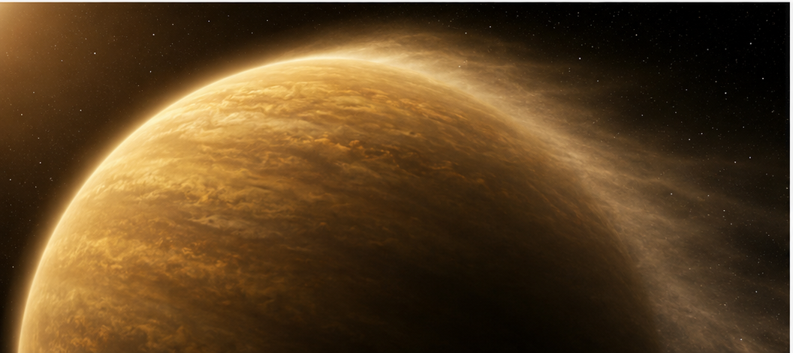
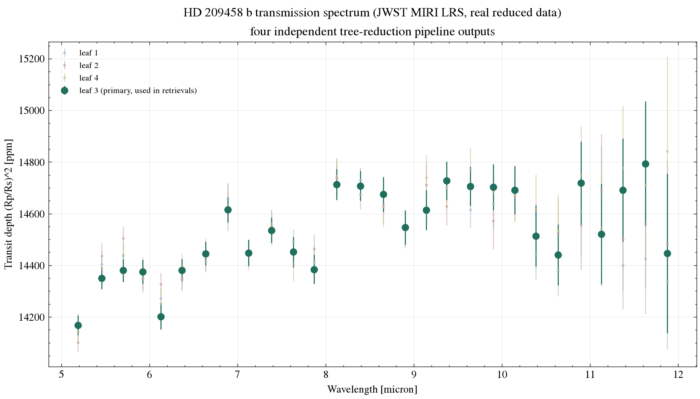
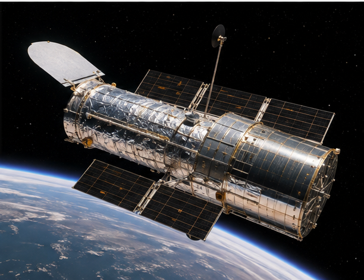

Exoplanet Atmosphere Report · JWST MIRI LRS
Nicknamed "Osiris" — the first known exoplanet observed to transit its star, and the first exoplanet whose atmosphere was directly detected. More than two decades later, JWST is still finding new structure in its atmosphere: a 2026 MIRI spectrum testing for magnesium silicate clouds.
AI-generated artist's concept of HD 209458 b — not a real photograph. All data and figures in this report come from actual JWST MIRI observations (see below).
Queried live from the NASA Exoplanet Archive TAP service (pscomppars).
| Radius | 15.58 Earth radii (~1.39 Jupiter radii) |
|---|---|
| Mass | 232.0 Earth masses (~0.73 Jupiter masses) |
| Orbital period | 3.52 days |
| Semi-major axis | 0.047 AU |
| Equilibrium temperature | 1459 K |
| Host star | HD 209458, G-type dwarf, Teff = 6091 K, 1.19 Rsun, 1.23 Msun |
| Distance | 48.3 parsecs (~157 light-years) |
| Discovery | 1999, radial velocity, transit confirmed the same year |

AI-generated 3D-render-style concept of the magnesium silicate cloud layer this report's data tests for — not an actual image of the planet.
The figure uses the reduced data behind Figure 4 of the 2026 paper: four "leaves" of one tree-structured reduction pipeline for the same underlying MIRI LRS observation. The leaves share the same exposures and most of the same processing, differing only in specific reduction-tree decisions — they are not four separate, independent pipelines. "Leaf 3" is the version the authors used in most of their retrievals.

scripts/analyze_spectrum.py.The spread between the four reduction-tree leaves (122 ppm, averaged across wavelength) is larger than the average photon-noise uncertainty (92 ppm) quoted on any single leaf's spectrum — for this dataset, which reduction choices you make can matter as much as the data's own statistical noise, echoing the source paper's point. This max-min spread is a sensitivity metric, not a statistically calibrated systematic uncertainty: the four leaves share the same underlying photons and much of the same processing, so the comparison isn't a clean variance decomposition, and the source paper's own tree-structured framework treats this question more rigorously than the simple comparison here.
System parameters come from the NASA Exoplanet Archive TAP service. The spectrum is reduced JWST MIRI LRS data released publicly on Zenodo (record 10.5281/zenodo.20089901) alongside its original README. See data/ for both files exactly as downloaded, and scripts/analyze_spectrum.py for the analysis (python scripts/analyze_spectrum.py to rerun it).

AI-generated illustration of the James Webb Space Telescope, whose MIRI instrument took the real spectrum used in this report. Not an official mission photograph — see NASA/JWST for real imagery.